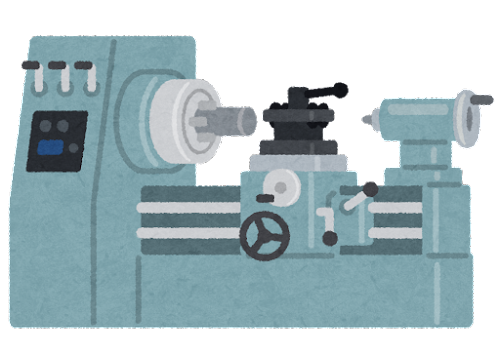
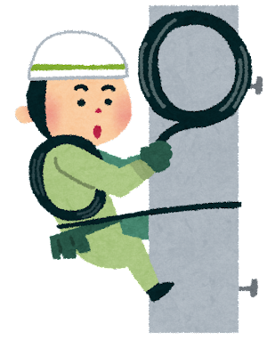

ちゅんちゅん丸 自己PR
出身地 秘密
年齢 19歳
趣味 釣り
強み 真面目 最後まで諦めない
弱み 優柔不断
ソーラーダイナソー
- 小さいころからモノ作りが好きでした。なので小学生のころ親に頼んでソーラーダイナソーを買ってもらいました
- 自分一人で説明書を読みながら作るのはとても大変でした。しかしだんだんと形になっていくがとても楽しく完成した時の喜びはいまでも覚えています。
- 高校2年生の時にチャレンジして合格することができました
- 高校1年生からはじめて旋盤というものを知って始めました
- 最初は大きな音やすごいはさやで回るのでとても怖かったです
- 練習をしていくうちに実力をつけることができ見事合格することができました
普通旋盤作業 技能士3級

第2種電気工事士

- 電気工事士は高校2年生の時に合格しました
- 筆記試験と実技試験があり私は筆記試験の方が難しかったです
- 実技試験では練習してきたことを出し切ることができたので良かったです。
取得資格
- 計算技術検定 3級
- 機械製図検定
- 危険物取扱者 乙種4類
- 第二種電気工事士
- 普通旋盤作業 技能士 3級
- 知的財産管理技能検定
- 陸上特殊無線技士 第二級
- 海上特殊無線技士 第二級
- 航空特殊無線技士
- 3次元CAD利用技術者試験2級
- ニュース検定3級
- ビジネス能力検定3級